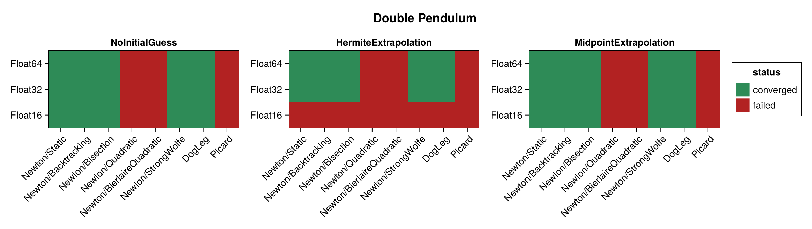
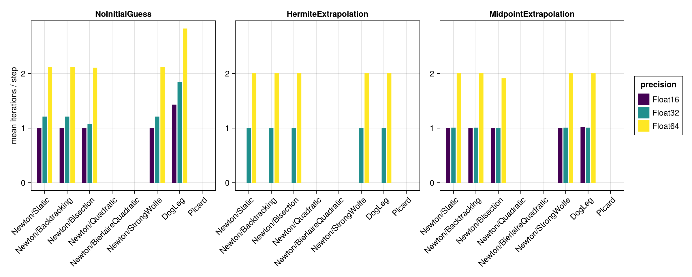
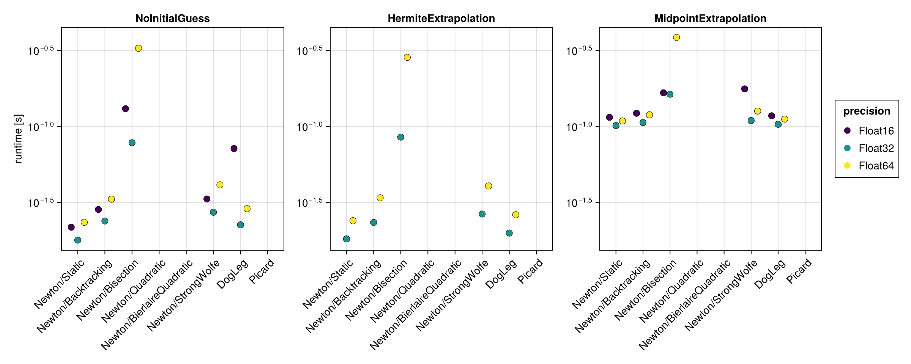
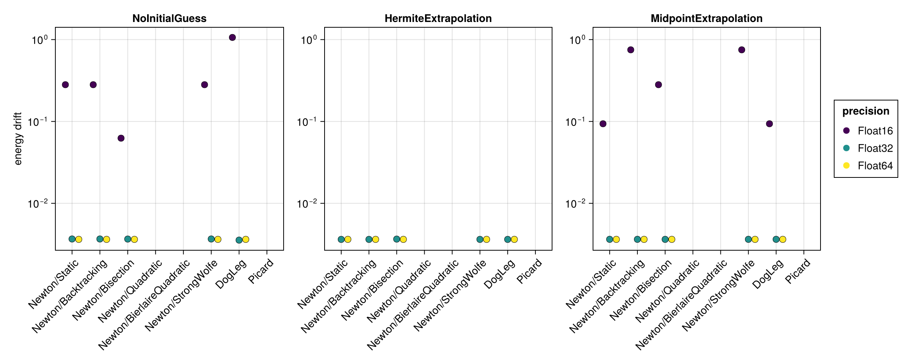
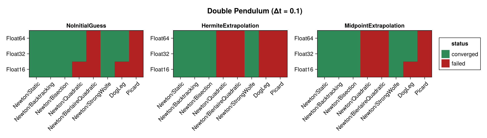
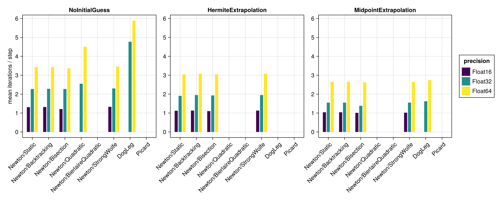
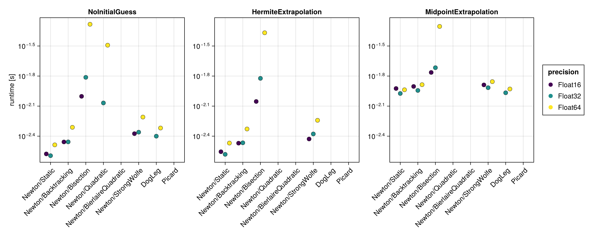
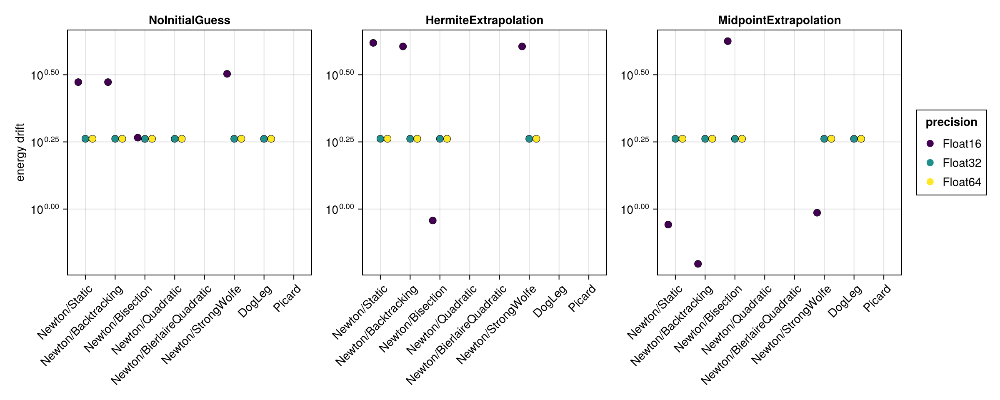

Double Pendulum
The double pendulum is a chaotic, strongly nonlinear Hamiltonian system. It is built here with hodeproblem (the canonical Hamiltonian form), so the implicit midpoint equations require genuine nonlinear iterations at every step. Because the Hamiltonian $H(t, q, p)$ depends on both the coordinates $q$ and the momenta $p$, the energy-drift proxy is evaluated from the full $(q, p)$ state.
The benchmark below is regenerated at documentation build time with a single, fast timing pass. See the driver script scripts/midpoint_double_pendulum.jl for accurate BenchmarkTools measurements. The results are shown first for the standard step $\Delta t = 0.01$ and then repeated for a coarse step $\Delta t = 0.1$ (see Coarse time step (Δt = 0.1)).
using SolverBenchmark
spec = double_pendulum_spec(timespan = (0.0, 10.0), timestep = 0.01)
df = run_benchmark(spec; timing = :quick, verbose = false, quiet = true)Convergence
plot_convergence(df; title = "Double Pendulum")
Nonlinear iterations
Mean number of nonlinear-solver iterations per time step (converged runs only):
plot_iterations(df)
Run time
plot_runtime(df)
Energy drift
Drift of the conserved energy $H(t, q, p)$ of the double pendulum:
plot_energy_drift(df)
Discussion
- The problem is chaotic and nonlinear, so Newton needs genuine iterations at every step. The robust line searches behave similarly, while the less robust ones (e.g.
Newton/Quadratic) may fail to converge. - No closed-form solution is available, so accuracy is judged solely through the energy drift, which scales with the floating point precision.
Results table
markdown_table(summary_table(df))| precision | solver_label | initial_guess | converged | iterations_mean | runtime_s | max_residual | energy_drift |
|---|---|---|---|---|---|---|---|
| Float16 | Newton/Static | NoInitialGuess | ✓ | 1 | 0.0217 | 0.24 | 0.281 |
| Float16 | Newton/Static | HermiteExtrapolation | ✗ | — | — | — | — |
| Float16 | Newton/Static | MidpointExtrapolation | ✓ | 1 | 0.115 | 0.171 | 0.0938 |
| Float16 | Newton/Backtracking | NoInitialGuess | ✓ | 1 | 0.0284 | 0.24 | 0.281 |
| Float16 | Newton/Backtracking | HermiteExtrapolation | ✗ | — | — | — | — |
| Float16 | Newton/Backtracking | MidpointExtrapolation | ✓ | 1 | 0.122 | 0.149 | 0.75 |
| Float16 | Newton/Bisection | NoInitialGuess | ✓ | 1 | 0.131 | 0.167 | 0.0625 |
| Float16 | Newton/Bisection | HermiteExtrapolation | ✗ | — | — | — | — |
| Float16 | Newton/Bisection | MidpointExtrapolation | ✓ | 1 | 0.167 | 0.159 | 0.281 |
| Float16 | Newton/Quadratic | NoInitialGuess | ✗ | 2.76 | 0.0817 | 0.832 | — |
| Float16 | Newton/Quadratic | HermiteExtrapolation | ✗ | — | — | — | — |
| Float16 | Newton/Quadratic | MidpointExtrapolation | ✗ | 3.44 | 0.193 | 1.8 | — |
| Float16 | Newton/BierlaireQuadratic | NoInitialGuess | ✗ | — | — | — | — |
| Float16 | Newton/BierlaireQuadratic | HermiteExtrapolation | ✗ | — | — | — | — |
| Float16 | Newton/BierlaireQuadratic | MidpointExtrapolation | ✗ | — | — | — | — |
| Float16 | Newton/StrongWolfe | NoInitialGuess | ✓ | 1 | 0.0334 | 0.24 | 0.281 |
| Float16 | Newton/StrongWolfe | HermiteExtrapolation | ✗ | — | — | — | — |
| Float16 | Newton/StrongWolfe | MidpointExtrapolation | ✓ | 1 | 0.177 | 0.149 | 0.75 |
| Float16 | DogLeg | NoInitialGuess | ✓ | 1.43 | 0.0716 | 0.25 | 1.06 |
| Float16 | DogLeg | HermiteExtrapolation | ✗ | — | — | — | — |
| Float16 | DogLeg | MidpointExtrapolation | ✓ | 1.02 | 0.118 | 0.231 | 0.0938 |
| Float16 | Picard | NoInitialGuess | ✗ | 76 | 1.04 | 39.7 | — |
| Float16 | Picard | HermiteExtrapolation | ✗ | — | — | — | — |
| Float16 | Picard | MidpointExtrapolation | ✗ | 24.4 | 0.385 | 3.83 | — |
| Float32 | Newton/Static | NoInitialGuess | ✓ | 1.21 | 0.0179 | 3.04e-05 | 0.00367 |
| Float32 | Newton/Static | HermiteExtrapolation | ✓ | 1 | 0.0182 | 2.98e-05 | 0.00363 |
| Float32 | Newton/Static | MidpointExtrapolation | ✓ | 1.01 | 0.101 | 3.04e-05 | 0.00364 |
| Float32 | Newton/Backtracking | NoInitialGuess | ✓ | 1.21 | 0.0239 | 3.04e-05 | 0.00367 |
| Float32 | Newton/Backtracking | HermiteExtrapolation | ✓ | 1 | 0.0234 | 2.98e-05 | 0.00363 |
| Float32 | Newton/Backtracking | MidpointExtrapolation | ✓ | 1.01 | 0.106 | 3.04e-05 | 0.00364 |
| Float32 | Newton/Bisection | NoInitialGuess | ✓ | 1.08 | 0.0782 | 2.98e-05 | 0.00366 |
| Float32 | Newton/Bisection | HermiteExtrapolation | ✓ | 1 | 0.0851 | 1.92e-05 | 0.00366 |
| Float32 | Newton/Bisection | MidpointExtrapolation | ✓ | 1 | 0.163 | 2.32e-05 | 0.00363 |
| Float32 | Newton/Quadratic | NoInitialGuess | ✗ | 1.56 | 0.0573 | 0.000485 | — |
| Float32 | Newton/Quadratic | HermiteExtrapolation | ✗ | 11 | 0.205 | 0.000664 | — |
| Float32 | Newton/Quadratic | MidpointExtrapolation | ✗ | 25.3 | 0.492 | 0.000685 | — |
| Float32 | Newton/BierlaireQuadratic | NoInitialGuess | ✗ | — | — | — | — |
| Float32 | Newton/BierlaireQuadratic | HermiteExtrapolation | ✗ | — | — | — | — |
| Float32 | Newton/BierlaireQuadratic | MidpointExtrapolation | ✗ | 16.6 | 0.262 | 0.000687 | — |
| Float32 | Newton/StrongWolfe | NoInitialGuess | ✓ | 1.21 | 0.0273 | 3.04e-05 | 0.00367 |
| Float32 | Newton/StrongWolfe | HermiteExtrapolation | ✓ | 1 | 0.0266 | 2.98e-05 | 0.00363 |
| Float32 | Newton/StrongWolfe | MidpointExtrapolation | ✓ | 1.01 | 0.109 | 3.04e-05 | 0.00364 |
| Float32 | DogLeg | NoInitialGuess | ✓ | 1.85 | 0.0225 | 3.04e-05 | 0.00356 |
| Float32 | DogLeg | HermiteExtrapolation | ✓ | 1 | 0.0199 | 2.98e-05 | 0.00363 |
| Float32 | DogLeg | MidpointExtrapolation | ✓ | 1.01 | 0.103 | 3.04e-05 | 0.00364 |
| Float32 | Picard | NoInitialGuess | ✗ | 100 | 1.78 | 36 | — |
| Float32 | Picard | HermiteExtrapolation | ✗ | 100 | 1.42 | 0.62 | — |
| Float32 | Picard | MidpointExtrapolation | ✗ | 100 | 1.32 | 0.0214 | — |
| Float64 | Newton/Static | NoInitialGuess | ✓ | 2.12 | 0.0234 | 5.65e-14 | 0.00363 |
| Float64 | Newton/Static | HermiteExtrapolation | ✓ | 2.01 | 0.024 | 5.53e-14 | 0.00363 |
| Float64 | Newton/Static | MidpointExtrapolation | ✓ | 2.01 | 0.109 | 5.66e-14 | 0.00363 |
| Float64 | Newton/Backtracking | NoInitialGuess | ✓ | 2.12 | 0.0333 | 5.65e-14 | 0.00363 |
| Float64 | Newton/Backtracking | HermiteExtrapolation | ✓ | 2.01 | 0.0339 | 5.53e-14 | 0.00363 |
| Float64 | Newton/Backtracking | MidpointExtrapolation | ✓ | 2.01 | 0.119 | 5.66e-14 | 0.00363 |
| Float64 | Newton/Bisection | NoInitialGuess | ✓ | 2.11 | 0.327 | 4.76e-14 | 0.00363 |
| Float64 | Newton/Bisection | HermiteExtrapolation | ✓ | 2.01 | 0.285 | 5.61e-14 | 0.00363 |
| Float64 | Newton/Bisection | MidpointExtrapolation | ✓ | 1.91 | 0.385 | 5.68e-14 | 0.00363 |
| Float64 | Newton/Quadratic | NoInitialGuess | ✗ | 8.01 | 0.292 | 2.94e-09 | — |
| Float64 | Newton/Quadratic | HermiteExtrapolation | ✗ | 26.4 | 0.617 | 2.77e-08 | — |
| Float64 | Newton/Quadratic | MidpointExtrapolation | ✗ | 16.4 | 0.5 | 2.73e-08 | — |
| Float64 | Newton/BierlaireQuadratic | NoInitialGuess | ✗ | — | — | — | — |
| Float64 | Newton/BierlaireQuadratic | HermiteExtrapolation | ✗ | — | — | — | — |
| Float64 | Newton/BierlaireQuadratic | MidpointExtrapolation | ✗ | — | — | — | — |
| Float64 | Newton/StrongWolfe | NoInitialGuess | ✓ | 2.12 | 0.0413 | 5.65e-14 | 0.00363 |
| Float64 | Newton/StrongWolfe | HermiteExtrapolation | ✓ | 2.01 | 0.0406 | 5.53e-14 | 0.00363 |
| Float64 | Newton/StrongWolfe | MidpointExtrapolation | ✓ | 2.01 | 0.126 | 5.66e-14 | 0.00363 |
| Float64 | DogLeg | NoInitialGuess | ✓ | 2.83 | 0.0288 | 5.65e-14 | 0.00363 |
| Float64 | DogLeg | HermiteExtrapolation | ✓ | 2.01 | 0.0263 | 5.53e-14 | 0.00363 |
| Float64 | DogLeg | MidpointExtrapolation | ✓ | 2.01 | 0.112 | 5.66e-14 | 0.00363 |
| Float64 | Picard | NoInitialGuess | ✗ | 100 | 4.04 | 36 | — |
| Float64 | Picard | HermiteExtrapolation | ✗ | 100 | 3.58 | 0.62 | — |
| Float64 | Picard | MidpointExtrapolation | ✗ | 100 | 3.49 | 0.0215 | — |
Coarse time step (Δt = 0.1)
With a ten times larger step the equations become more strongly nonlinear, which stresses the solvers noticeably more than the $\Delta t = 0.01$ results above.
spec1 = double_pendulum_spec(timespan = (0.0, 10.0), timestep = 0.1)
df1 = run_benchmark(spec1; timing = :quick, verbose = false, quiet = true)Convergence
plot_convergence(df1; title = "Double Pendulum (Δt = 0.1)")
Nonlinear iterations
plot_iterations(df1)
Run time
plot_runtime(df1)
Energy drift
plot_energy_drift(df1)
Results table
markdown_table(summary_table(df1))| precision | solver_label | initial_guess | converged | iterations_mean | runtime_s | max_residual | energy_drift |
|---|---|---|---|---|---|---|---|
| Float16 | Newton/Static | NoInitialGuess | ✓ | 1.31 | 0.00265 | 0.244 | 2.97 |
| Float16 | Newton/Static | HermiteExtrapolation | ✓ | 1.12 | 0.00278 | 0.21 | 4.16 |
| Float16 | Newton/Static | MidpointExtrapolation | ✓ | 1.04 | 0.0119 | 0.246 | 0.875 |
| Float16 | Newton/Backtracking | NoInitialGuess | ✓ | 1.32 | 0.00349 | 0.244 | 2.97 |
| Float16 | Newton/Backtracking | HermiteExtrapolation | ✓ | 1.13 | 0.00339 | 0.232 | 4.03 |
| Float16 | Newton/Backtracking | MidpointExtrapolation | ✓ | 1.04 | 0.0125 | 0.246 | 0.625 |
| Float16 | Newton/Bisection | NoInitialGuess | ✓ | 1.21 | 0.00994 | 0.233 | 1.84 |
| Float16 | Newton/Bisection | HermiteExtrapolation | ✓ | 1.1 | 0.00883 | 0.155 | 0.906 |
| Float16 | Newton/Bisection | MidpointExtrapolation | ✓ | 1.01 | 0.0172 | 0.153 | 4.22 |
| Float16 | Newton/Quadratic | NoInitialGuess | ✗ | 3.14 | 0.00853 | 2.9 | — |
| Float16 | Newton/Quadratic | HermiteExtrapolation | ✗ | 4.29 | 0.0107 | 2.47 | — |
| Float16 | Newton/Quadratic | MidpointExtrapolation | ✗ | 8.06 | 0.0285 | 2.32 | — |
| Float16 | Newton/BierlaireQuadratic | NoInitialGuess | ✗ | — | — | — | — |
| Float16 | Newton/BierlaireQuadratic | HermiteExtrapolation | ✗ | — | — | — | — |
| Float16 | Newton/BierlaireQuadratic | MidpointExtrapolation | ✗ | — | — | — | — |
| Float16 | Newton/StrongWolfe | NoInitialGuess | ✓ | 1.33 | 0.00422 | 0.249 | 3.19 |
| Float16 | Newton/StrongWolfe | HermiteExtrapolation | ✓ | 1.13 | 0.00373 | 0.232 | 4.03 |
| Float16 | Newton/StrongWolfe | MidpointExtrapolation | ✓ | 1.02 | 0.0129 | 0.161 | 0.969 |
| Float16 | DogLeg | NoInitialGuess | ✗ | — | — | — | — |
| Float16 | DogLeg | HermiteExtrapolation | ✗ | — | — | — | — |
| Float16 | DogLeg | MidpointExtrapolation | ✗ | — | — | — | — |
| Float16 | Picard | NoInitialGuess | ✗ | 99 | 0.149 | 51.1 | — |
| Float16 | Picard | HermiteExtrapolation | ✗ | — | — | — | — |
| Float16 | Picard | MidpointExtrapolation | ✗ | 34.7 | 0.0513 | 1.72 | — |
| Float32 | Newton/Static | NoInitialGuess | ✓ | 2.27 | 0.00254 | 3e-05 | 1.83 |
| Float32 | Newton/Static | HermiteExtrapolation | ✓ | 1.91 | 0.00262 | 3.01e-05 | 1.83 |
| Float32 | Newton/Static | MidpointExtrapolation | ✓ | 1.55 | 0.0106 | 2.95e-05 | 1.83 |
| Float32 | Newton/Backtracking | NoInitialGuess | ✓ | 2.28 | 0.00349 | 3e-05 | 1.83 |
| Float32 | Newton/Backtracking | HermiteExtrapolation | ✓ | 1.95 | 0.00342 | 3.01e-05 | 1.83 |
| Float32 | Newton/Backtracking | MidpointExtrapolation | ✓ | 1.55 | 0.0114 | 2.95e-05 | 1.83 |
| Float32 | Newton/Bisection | NoInitialGuess | ✓ | 2.27 | 0.0154 | 2.3e-05 | 1.83 |
| Float32 | Newton/Bisection | HermiteExtrapolation | ✓ | 1.93 | 0.015 | 2.78e-05 | 1.83 |
| Float32 | Newton/Bisection | MidpointExtrapolation | ✓ | 1.38 | 0.0192 | 2.75e-05 | 1.83 |
| Float32 | Newton/Quadratic | NoInitialGuess | ✓ | 2.55 | 0.00854 | 0.000619 | 1.83 |
| Float32 | Newton/Quadratic | HermiteExtrapolation | ✗ | 2.98 | 0.00886 | 0.000657 | — |
| Float32 | Newton/Quadratic | MidpointExtrapolation | ✗ | 7.28 | 0.0227 | 0.000254 | — |
| Float32 | Newton/BierlaireQuadratic | NoInitialGuess | ✗ | — | — | — | — |
| Float32 | Newton/BierlaireQuadratic | HermiteExtrapolation | ✗ | — | — | — | — |
| Float32 | Newton/BierlaireQuadratic | MidpointExtrapolation | ✗ | — | — | — | — |
| Float32 | Newton/StrongWolfe | NoInitialGuess | ✓ | 2.3 | 0.00436 | 2.94e-05 | 1.83 |
| Float32 | Newton/StrongWolfe | HermiteExtrapolation | ✓ | 1.95 | 0.00419 | 3.01e-05 | 1.83 |
| Float32 | Newton/StrongWolfe | MidpointExtrapolation | ✓ | 1.55 | 0.0121 | 2.95e-05 | 1.83 |
| Float32 | DogLeg | NoInitialGuess | ✓ | 4.77 | 0.00398 | 2.77e-05 | 1.83 |
| Float32 | DogLeg | HermiteExtrapolation | ✗ | — | — | — | — |
| Float32 | DogLeg | MidpointExtrapolation | ✓ | 1.62 | 0.0108 | 2.95e-05 | 1.83 |
| Float32 | Picard | NoInitialGuess | ✗ | 100 | 0.181 | 36.9 | — |
| Float32 | Picard | HermiteExtrapolation | ✗ | 100 | 0.184 | 195 | — |
| Float32 | Picard | MidpointExtrapolation | ✗ | 100 | 0.174 | 0.947 | — |
| Float64 | Newton/Static | NoInitialGuess | ✓ | 3.43 | 0.00326 | 5.29e-14 | 1.83 |
| Float64 | Newton/Static | HermiteExtrapolation | ✓ | 3.04 | 0.0034 | 5.42e-14 | 1.83 |
| Float64 | Newton/Static | MidpointExtrapolation | ✓ | 2.65 | 0.0116 | 4.66e-14 | 1.83 |
| Float64 | Newton/Backtracking | NoInitialGuess | ✓ | 3.44 | 0.00488 | 5.48e-14 | 1.83 |
| Float64 | Newton/Backtracking | HermiteExtrapolation | ✓ | 3.08 | 0.00469 | 5.42e-14 | 1.83 |
| Float64 | Newton/Backtracking | MidpointExtrapolation | ✓ | 2.65 | 0.013 | 4.66e-14 | 1.83 |
| Float64 | Newton/Bisection | NoInitialGuess | ✓ | 3.36 | 0.0521 | 3.5e-14 | 1.83 |
| Float64 | Newton/Bisection | HermiteExtrapolation | ✓ | 3.05 | 0.0429 | 4.28e-14 | 1.83 |
| Float64 | Newton/Bisection | MidpointExtrapolation | ✓ | 2.62 | 0.0496 | 5.03e-14 | 1.83 |
| Float64 | Newton/Quadratic | NoInitialGuess | ✓ | 4.51 | 0.0322 | 2.92e-08 | 1.83 |
| Float64 | Newton/Quadratic | HermiteExtrapolation | ✗ | 5.1 | 0.032 | 1.76e-08 | — |
| Float64 | Newton/Quadratic | MidpointExtrapolation | ✗ | 12.5 | 0.0485 | 2.55e-08 | — |
| Float64 | Newton/BierlaireQuadratic | NoInitialGuess | ✗ | — | — | — | — |
| Float64 | Newton/BierlaireQuadratic | HermiteExtrapolation | ✗ | — | — | — | — |
| Float64 | Newton/BierlaireQuadratic | MidpointExtrapolation | ✗ | — | — | — | — |
| Float64 | Newton/StrongWolfe | NoInitialGuess | ✓ | 3.46 | 0.00617 | 5.28e-14 | 1.83 |
| Float64 | Newton/StrongWolfe | HermiteExtrapolation | ✓ | 3.08 | 0.00573 | 5.42e-14 | 1.83 |
| Float64 | Newton/StrongWolfe | MidpointExtrapolation | ✓ | 2.65 | 0.0139 | 4.66e-14 | 1.83 |
| Float64 | DogLeg | NoInitialGuess | ✓ | 5.89 | 0.0048 | 5.4e-14 | 1.83 |
| Float64 | DogLeg | HermiteExtrapolation | ✗ | — | — | — | — |
| Float64 | DogLeg | MidpointExtrapolation | ✓ | 2.74 | 0.0118 | 5.39e-14 | 1.83 |
| Float64 | Picard | NoInitialGuess | ✗ | 100 | 0.405 | 36.9 | — |
| Float64 | Picard | HermiteExtrapolation | ✗ | 100 | 0.407 | 195 | — |
| Float64 | Picard | MidpointExtrapolation | ✗ | 100 | 0.391 | 0.947 | — |